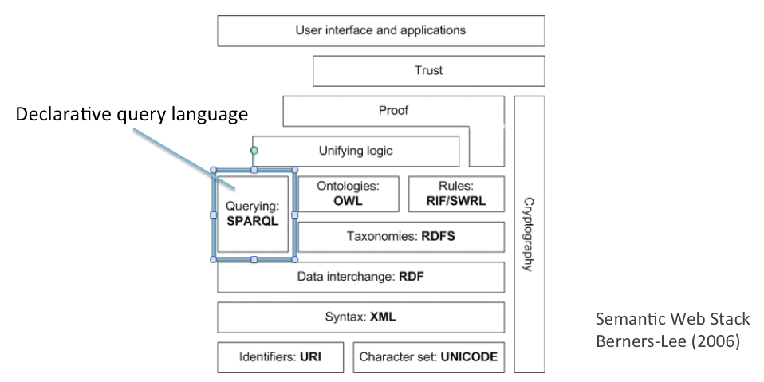

SPARQL was proposed as a standard by the World Wide Web Consortium (W3C) in November 2008. It is maintained and developed by the W3C SPARQL Working Group, who in November 2012 recommended an upgraded version SPARQL 1.1 with new features including an update language (allowing users to change as well as consult RDF datasets). The latest recommendation can be found at these two sites, one for the query language and one for update:
http://www.w3.org/TR/sparql11-query http://www.w3.org/TR/sparql11-update
Along with RDF and OWL, SPARQL is one of the three core standards of the Semantic Web. Its location in the Semantic Web "stack of languages" is shown in Figure 1. One point to note in the figure is that SPARQL does not depend on RDFS and OWL. However, as will be shown later in the chapter, knowledge encoded in RDFS and OWL may enhance the power of querying.

Figure 1: SPARQL in Semantic Web stack
SPARQL, as a database query language, resembles the well-known Structured Query Language (SQL). The syntax of SPARQL is shaped by the fact that it operates over graph data represented as RDF triples, as opposed to SQL's tabular data organised in a relational database.
The essence of querying is shown by the following illustration, using for the time being English rather than RDF. Imagine an RDF dataset with statements containing the following information:
The Beatles made the album "Help".
The Beatles made the album "Abbey Road".
The Beatles made the album "Let it be".
The Beatles includes band-member Paul McCartney.
Wings made the album "Band on the run".
Wings made the album "London Town".
Wings includes band-member Paul McCartney.
The Rolling Stones made the album "Hot Rocks".
One can imagine various queries that a music portal might need to run over such a dataset. For instance, the portal might construct web pages on demand for any album or group nominated by the user. This would require retrieval of information from the dataset for questions such as the following:
Who made the album "Help"?
Which albums did the Beatles make?
These are so-called WH-questions ("who", "what", "where", etc.), for which the first would receive a single answer ("The Beatles"), and the second a list of three answers ("Help", "Abbey Road", "Let it be"). The SPARQL counterparts to these questions use RDF triples that contain variables; these correspond to the WH-words in the English queries. The general form for such questions (still working in English) is as follows:
Give me all values of X such that X made the album "Help".
Give me all values of X such that the Beatles made X.
We can go further than this by introducing more than one variable, thus generalising the query:
Give me all values of X and Y such that X made Y.
This is like asking a question with two WH-words, such as "Which bands made which albums?". The answer is not a list of values, as before, but a list of X-Y pairs that could be conveniently presented in a table:
| X | Y |
| The Beatles | "Help" |
| The Beatles | "Abbey Road" |
| The Beatles | "Let it be" |
| Wings | "Band on the run" |
| Wings | "London Town" |
| The Rolling Stones | "Hot Rocks" |
In all these examples, the question is represented by a single statement with one or more variables; however, we can also construct more complex queries containing several statements:
Give me all values of X and Y such that: (a) X made Y, and (b) X includes band member Paul McCartney.
The answer would be the first five pairs from the previous answer, excluding "Hot Rocks" since the dataset does not list Paul McCartney as a band member of the Rolling Stones.
Moving now from English to SPARQL, here is the encoding for the simple query "Which albums did the Beatles make?" for the MusicBrainz dataset. For now don't worry about learning the exact syntax; the important thing is to understand what the various bits and pieces are doing.
PREFIX dc: <http://purl.org/dc/elements/1.1/>
PREFIX foaf: <http://xmlns.com/foaf/0.1/>
PREFIX mo: <http://purl.org/ontology/mo/>
SELECT ?album_title
WHERE {
?band foaf:name "The Beatles" ; foaf:made ?album .
?album a mo:SignalGroup ; dc:title ?album_title .
}
The query begins with PREFIX statements that define abbreviations for namespaces. The query proper begins in the line starting SELECT, which also contains a variable (corresponding to X and Y in our English examples) starting with the question mark character '?'. Choose any word you like for the rest of the variable name, provided that you use it consistently. The remainder of the query, starting WHERE, contains a list of RDF triple patterns. These are like RDF triples except that they include variables. They are expressed in Turtle, which we introduced in Chapter 1.
The WHERE clause in the example has two RDF triple patterns, separated by a full stop. The first pattern matches resources made by the Beatles; the second requires that these resources belong to a class mo:SignalGroup (this rather weird name distinguishes albums, which are "signal groups", from their constituent tracks, which are also encoded as resources made by the Beatles).
The response to a query is computed by a process known as graph matching.
Before proceeding to the detailed structure of queries, it is worth pausing to review the concepts introduced so far: